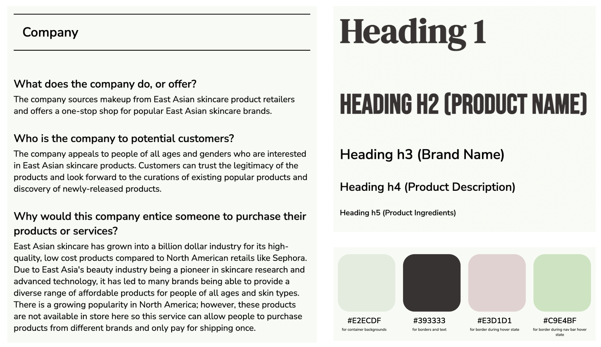
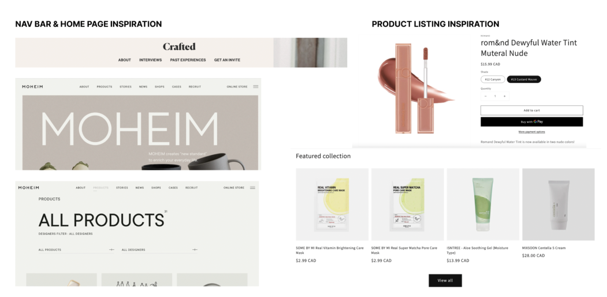
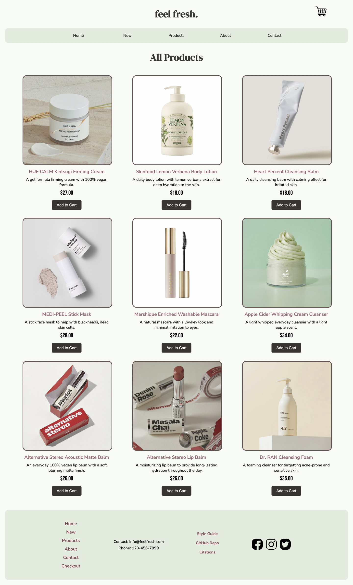
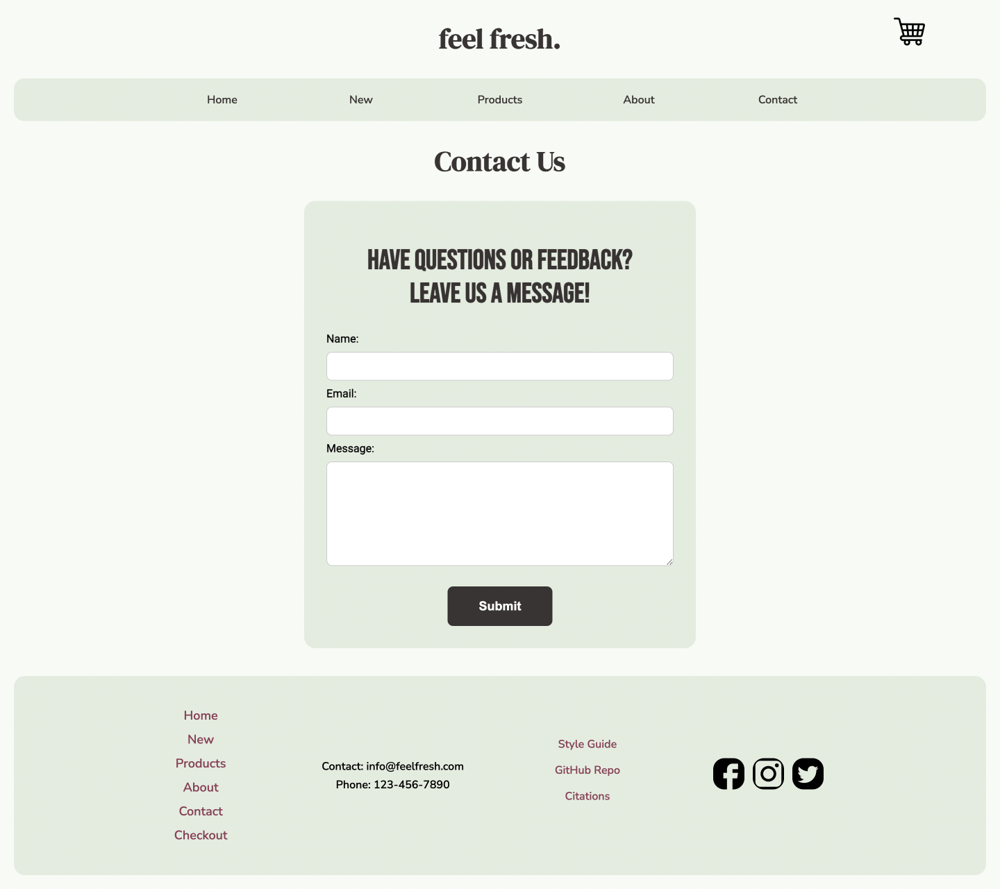
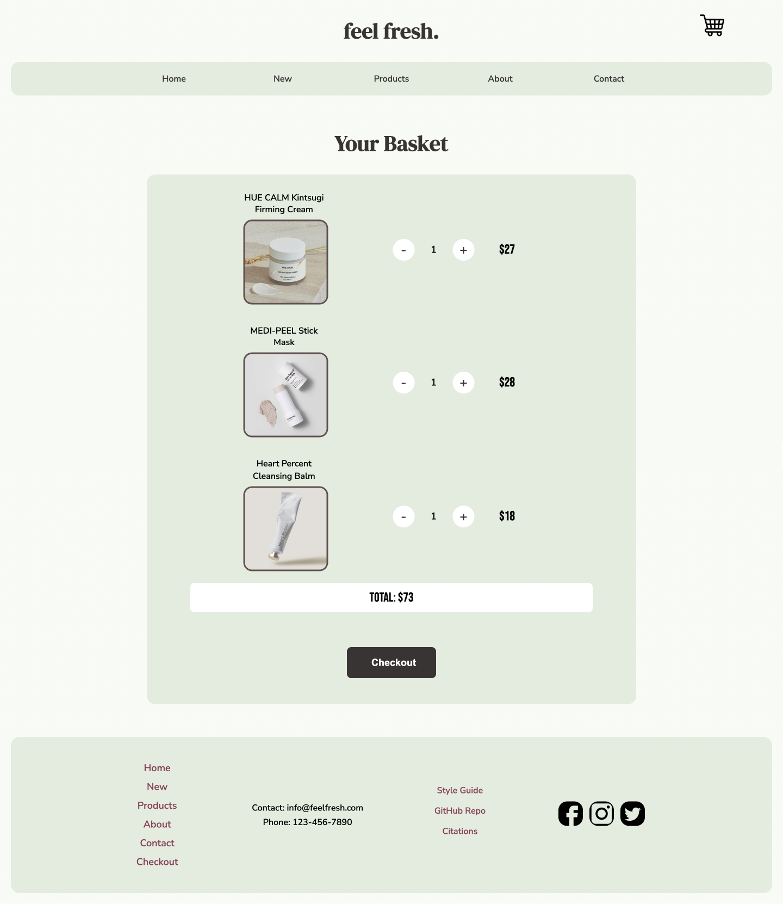
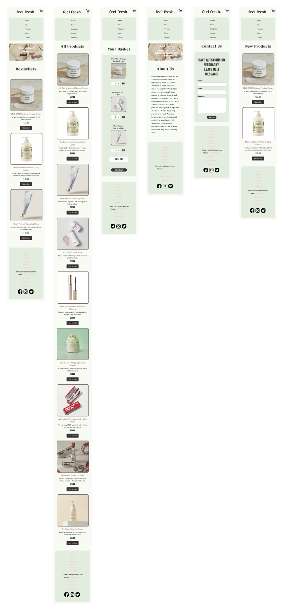

Front-End Coding for East Asian Skincare & Beauty E-commerce Brand
Project Constraints
Prompt: Using HTML/CSS, design and code an application for a fictitious brand, responsive on both web and mobile.
Time: 8 weeks
Tools used: HTML/CSS, Git, Figma
Team: Myself and Anson
My Role: HTML/CSS + Branding
Discovery + Competitive Analysis
I was interested in creating an East Asian E-Commerce Company that provided a one-stop shop for East Asian skincare and beauty products.
Branding + Art Direction + Graphic Design
I was responsible for branding and design of the website, which included copywriting, curating images, typography, and color palette. I created a style guide to communicate my design vision to my partner.
 Wireframe Sketches
I quickly sketched wireframe iterations to help visualize how we wanted to design the website. I had to consider both the competitor analysis findings and coding restraints when iterating.

Working Prototype - Web and Mobile
Using HTML/CSS, my partner and I collaborately coded the website using Git. Learning git was very challenging for me initially, but I admit that it made the collaboration process a lot smoother, especially since my partner and I never met in person.
The pages that I was responsible for coding were the landing page, the contact page, and the checkout page. One thing I regret not doing is documenting images of our coding process. But to explain what we did, we first fleshed out the skeleton of each page using HTML and added all of our curated images and copywriting. Afterwards, we worked on the layout in CSS. Finally, we fine tuned the stylization by playing around with colours, borders, and spacing. Then, we used media queries to ensure that the site was responsive on any screen size, though our main focus was desktop and mobile. This was not a linear process, and we solved little problems bit by bit until we were able to complete our final working site.
Desktop View of Pages
  Mobile View of Pages
Reflection
Since this was my first time coding using HTML/CSS, I found the process to be challenging but also very fun and rewarding. Working on UI design and front-end coding at the same time made me realize that I needed to constrain my design ideas to what was within my coding ability. I now have a deeper understanding and appreciation for the front-end developer role and I think it will help me work better in cross-functional teams in my future career.